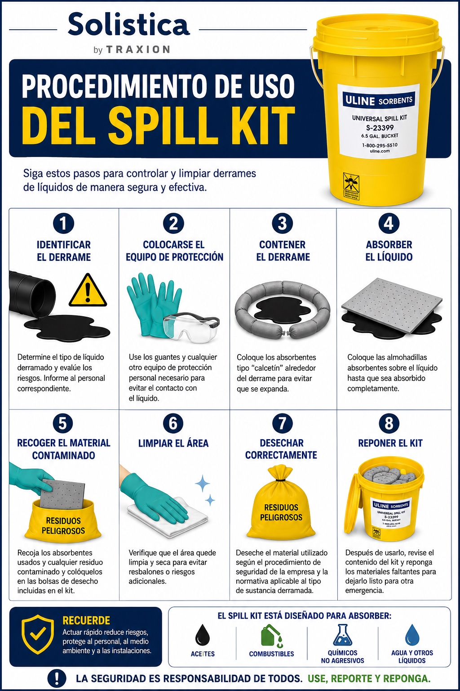
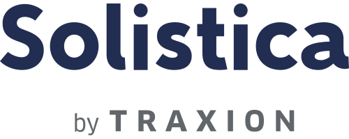
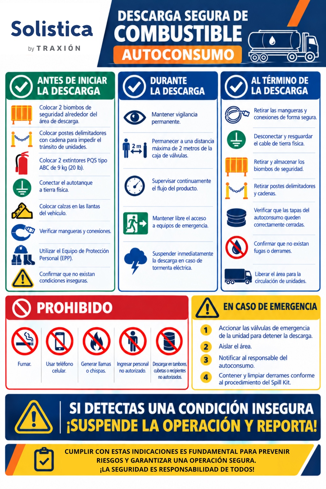

MÓDULO 01CONTROL DE DERRAMES
Uso seguro del Spill Kit
Identificación de riesgos, contención, absorción, limpieza y disposición de residuos.

Evalúa los conocimientos esenciales de respuesta ante derrames y descarga segura de combustible, con constancia descargable en PDF al aprobar.
Dos módulos independientes, cada uno con su propio comprobante.

MÓDULO 01Identificación de riesgos, contención, absorción, limpieza y disposición de residuos.

MÓDULO 02Preparativos, medidas durante la descarga, cierre de operación y respuesta ante emergencias.
Las evaluaciones están basadas en las infografías proporcionadas. La constancia acredita únicamente el resultado del cuestionario; no sustituye la capacitación práctica ni las autorizaciones operativas.